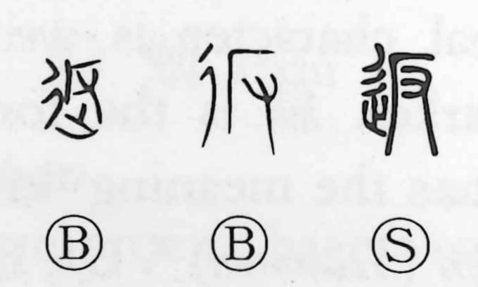

返

Kun: kaesu, kaeru | On: hen
to return ・ to give back ・ to send back
Explanation
A phono-semantic character: 反 is the phonetic, originally showing hands braced (又) against a steep cliff (厂), the body turning back. Added to this is 辵 (辶), the sign of walking or going, which gives the motion. Together they express the act of returning—going back to the origin, handing or sending something back. In later usage, 反 came to carry the sense of opposing or rebelling, while 返 is used for the concrete act of return.